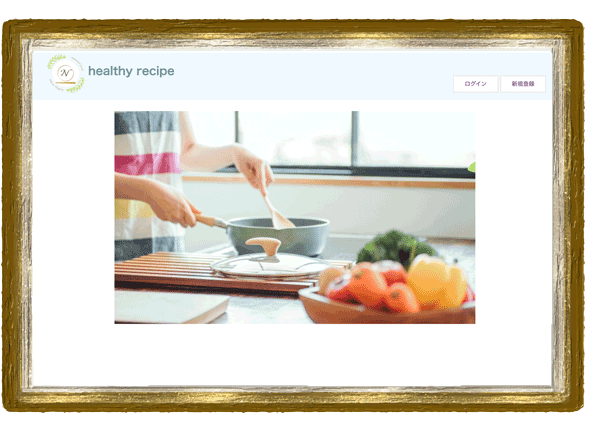
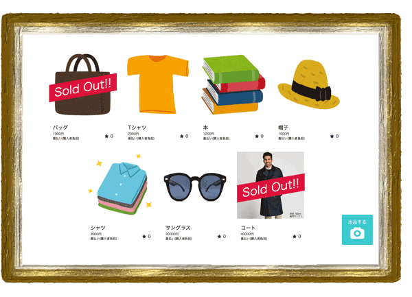
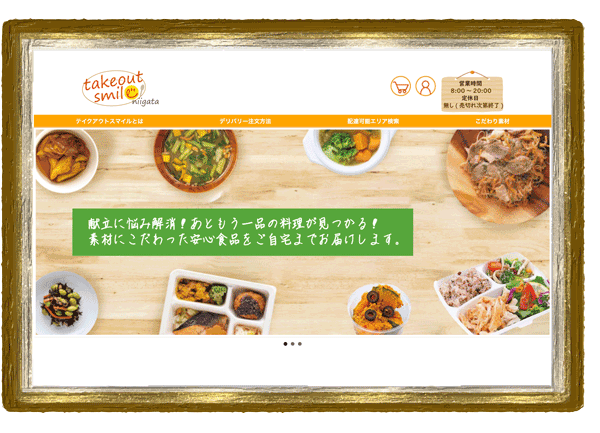

結婚式場ホテルでの厨房調理担当や、
約6年間の接客経験などを経験し、
直近では厨房用品機器の総合商社にて、
受注入力事務を担当。
昨年プログラミングに興味を持ち始め、
オンラインスクールの受講を開始。
Ruby on Railsをメインに学習し、
さらにWEB制作にも興味を持った為、
現在4ヶ月間のDS Webデザイン科を受講。
2022年9月に卒業予定。
只今PHP、jQuery、SQLをメインに学習奮闘中。
佐野 成美
HTML5 & CSS3

javascript

jQuery

Illustrator&Photoshop
Ruby
Ruby on Rails
PHP
MySQL
AWS(S3/EC2)
Github
- 
- 
-

- Takeout Smile Niigata
- 架空の惣菜デリバリー店の注文サイトです。
職業訓練の課題としてフロント部分を作成しました。
（商品詳細ページはスマイルセット弁当のみ作成をしております。）
開発環境
HTML&CSS/javascript/jQuery/Heroku/
・メイン画像のスライダーはjQueryのプラグインbxsliderを使用しました。
開発期間
約7日間（1日あたり平均作業時間:約5時間）
-
- Narumi's Portfolio
- 自分自身のポートフォリオサイトです。
作品展をイメージして作成しました。
開発環境
HTML&CSS/Heroku/
開発期間
約3日間（1日あたり平均作業時間:約5時間）